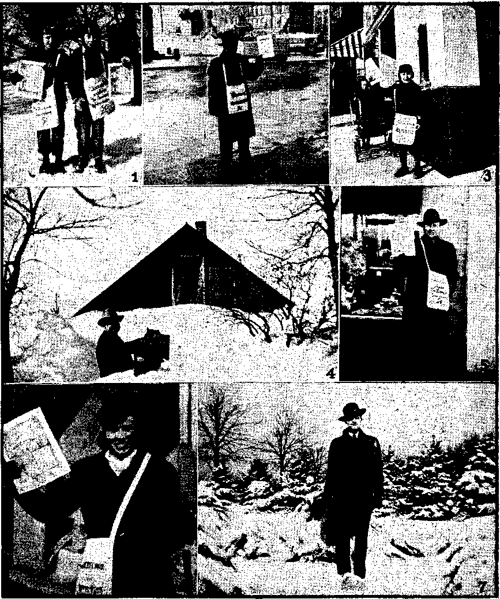

B

Contents
Spirits of Devils to the Kings of the Earth 3 A King Consults a Witch
Why Senator Bouchard Lost His Job
Church Syndicates and Education
r Religion! a-Babylonia-Ooughuppa
Bishop* Oxnam Asks for Information
Who Supervised the Preparation of
■ The United States Constitution?
Jehovah’s witnesses in Wintertime
“Despised and Rejected of Men”
Presenting “This Gospel of the Kingdom”
Practical Illustrations of Talk Introductions 29 That “Strange Stench” in the Bronx
President Secretary Editor
Published Every other Wednesday by WATCHTOWER BIBLE AND TRACT SOCIETY, INC. 117 Adams St, Brooklyn, N. Y., U. S. A.
N. IL Knorr W. E. Van Amburgh Clayton J. Woodworth
Five Cents a Copy ¥1 a year in the United States $1,25 to Canada and all other countries
NOTICE TO SUBSCRIBERS Remittances: For your own safety, remit by postal or express money order. When coin or currency is lost in the ordinary mails, there is no redress. Remittances from countries other than those named below may be made to the Brooklyn office, but only by international postal money order. Receipt of a new or renewal subscription will be acknowledged only when requested. Notice of Expiration is sent with the journal one month before subscription expires, Please renew promptly to avoid loss of copies. Send change of address direct to us rather than to the post office. Your request should reach us at least two weeks before the date of Issue with which it is to take effect. Send your old as well as the new address. Copies will not be forwarded by the post office to your new address unless extra postage 1* provided by you. Published also in Greek, Portuguese, Spanish, and Ukrainian, '
OFFICES FOR OTHER COUNTRIES
England 34 Craven Terrace, London, W, 2
Australia 2 Homebush Rd., Strathfield, N. S. W. South Africa 623 Boston House, Cape Town
Mexico Calzada Melchor Ocampo 71, Mexico, D. F. Brazil Rua Licinio Cardoso 330, Rio de Janeiro
Argentina Calle Honduras 5646-43, Buenos Aires Sintered as second-class matter at Brooklyn, N, Y., under the Act of March 3, 1879.
2
Mary Baker Glover Eddy Versus the Sacred Scriptures
♦ Here are three quotations from Mrs. Eddy’s Science and Health:
The efficacy of the crucifixion lay in the practical affection and goodness it demonstrated for mankind. [Page 24, paragraph 1]
The material blood of Jesus was no more efficacious to cleanse from sin when it was shed upon the “accursed tree” than when it was flowing in his veins as he went about his Father’s business. [Page 25, paragraph 1]
Christian Science acts as an alternative, neutralizing error with Truth. [Page 162, paragraph 1]
Here are three quotations from the sacred Scriptures:
Forasmuch as yc know that yc were not redeemed with corruptible things, as silver and gold, from your vain conversation received by tradition from your fathers; but with the precious blood of Christ, as of a lamb without blemish and without spot.—-1 Peter 1:18,19.
And almost all things are by the law purged with blood; and without shedding of blood is no remission.—Hebrews 9: 22.
For it is not possible that the blood of bulls and of goats should take away sins. Having therefore, brethren, boldness to enter into the holiest by the blood of Jesus, by a new and living way, which lie hath consecrated for us, through the veil, that is to say, his flesh.—Hebrews 10:4, 19, 20.
Doctor Butler Has the Blues .
♦ Dr. Nicholas Murray Butler, president of Columbia University, New York, characterized 1941. as “the most disastrous year in the history of civilization” marked by the “complete abandonment and wreckage of the rule of law, moral principles and mental obligations” and, We are swinging back into the jungle. We are compelled to suspend our whole life and civilization while we bend all our efforts to crush the most highly organized band of economic gain-seekers that the world has ever known.
CONSOLATION
“And in His name shall the nations hope?’—Matthew. 12:21, A.S. V.
Volume XXVI Brooklyn, N. Y», Wednesday, January 17, 1945
Number 661
‘‘For they are the spirits of devils, working miracles, which go forth unto the kings of the earth and of the whole world, to gather them to the battle of that great day of God Almighty.”—Revelation 16:14.
* <XX7HEN the wicked beareth rule, the
VV people mourn.” (Proverbs 29: 2) Do the people now mourn? It is not even necessary to answer that question. There has never been a time in human history when they had more to mourn about. The same proverb quoted above also states: “When the righteous are in authority, the people rejoice.” The undeniable physical facts convict as unrighteous and wicked the powers that bear rule.
But the fault goes higher than imperfect man: it reaches into the invisible realm of spirit creatures. Bible prophecy opens the eyes of understanding to discern the hordes of evil demons behind the wickedness and violence seen on every hand. These wicked spirit forces are organized under powerful princelings, and over them all and crowning the forces of evil presides the Devil himself, the god of “this present evil world”, the “prince of the demons”.—2 Corinthians 4:4; Galatians 1:4; Matthew *9:34 and 12:24, Am. Stan. Ver.
Satan’s organization, visible arid invisible, was seen in symbol many' centuries ago. The vision is recorded in the second chapter of the Bible book called “Daniel”. It was a great and terrible image, with head of gold, breast and arms of silver, belly and thighs of brass, legs of iron, and feet part iron and part clay. A recent book published by the Watchtower Society and entitled "The Kingdom Is at Hand” discusses this vision, and shows that the head of gold represents Satan, the silver parts stand for the demon princelings, the brass belly and thighs the legions of lesser spirit demons, and the legs and feet foreshadow visible earthly governments, with plenty of religion commingled in. Concerning the brass parts just over the iron legs "The Kingdom Is at Hand” says (pages 185-186):
The legions of other spirit demons Satan the Devil formed into a subsidiary organisation under the demon princes. He appointed them to have immediate or closest touch with humankind upon the earth. They would be intermediate between man and the spirit princes. The assigning of this position to such demons or unclean spirits may be what is pictured in the Revelation as the dragon’s drawing a third part of the stars of heaven with his tail and easting them down to the earth. These keep in touch with religious humankind by means of spirit mediums, astrologers, magicians, and other religious racketeers, and spread their “doctrines of demons” by means of religious clergymen. (1 Timothy 4:1; Deuteronomy 18:10-12; Isaiah 47:1, 12, 13) The religious clergy are the direct visible link between mankind and the invisible demons. The organization of this lower order of spirit demons next under the spirit princes is what the prophecy means in saying: “And after thee shall arise . . . another third kingdom of brass, which shall bear rule over all the earth.” They correspond, therefore, with the ‘belly and thighs of copper1 in the terrible image, and are under the gold hgad. Brass (or copper), and silver, and gold, are superior metals, and hence are well used in symbolizing the unseen spiritual parts of '^Satan’s totalitarian organization.
4 Fantastic? It would be fortunate for <■ humankind if it were; but, alas, the physical facts fit too well for the foregoing to be brushed aside as mere fantasy. Repeatedly, and as recently as the previous issue, this magazine has published information on demon activity, the channels through which it works, and the stepped-up tempo of its assault in this present world crisis. The legions • of demons hover over humanity like a gigantic umbrella and move their human puppets in harmony with their will. In these perilous “last days”, for which the Scriptures foretold a demon blitz, the wicked spirits have pushed their all-out campaign into every field of human endeavor. Religion is their base of operations, and from there they have invaded the fields of entertainment, medicine, science, education, etc. .
But most importantzto men of today is the position of their visible rulers. Are they guiding governmental affairs in an attempt to block the demon invaders? Are they sticking to the high Bible plane of avoiding everything smacking of evil spirits? Or does an examination of the , facts bring us up face to face with the realization that they permit the demons to keep in touch with'and direct them through various channels, even such obvious ones as astrologers and spirit mediums? If so, then any branding of ■ the foregoing quotation as fantastic is false, and the mourning people must admit that they are under a wicked rule honeycombed by invisible demons.
The Axis Hillers
Look first at Germany. Little opposition will meet the claim that Nazidom is driven on by demons. Hitler is often referred to as a madman, which is one demon-possessed. In an article about Hitler’s being reduced to witchcraft William Seabrook, noted explorer and student of voodoo magic, said (Los Angeles Examiner, December 19, 1943):
Shaw Desmond, founder of the Institute of Psychical Research, says Hitler is so steeped in black magic that he never makes a decision without consulting his "demons”. “When in doubt,” asserts Desmond, “he retires to his dark hole at Berchtesgaden, which he believes is impregnated by the black vibrations of his ritual. Invoking his ‘guides’ or ‘demons’, he goes into a seeming trance, and is then ‘possessed’ by the supposed spirits who advise him. He feels a pricking in the thumbs when they come.”
In his public orations, there is a weird chanting effect that almost hypnotizes his hearers. It is an effect well understood by voodooists, who use it themselves. And, after hearing it just once, I was personally convinced that the mystic of Berchtesgaden had made a close and intimate study of diabolism. Personally, I don’t dally with witchcraft any more [his article tells of his seeing strong men turned into “hopeless cripples or mumbling idiots in a space of weeks” as a result of black magic]. But, if I did, . . . and if I wanted to know just when Hitler is going to come to the end of his road, I wouldn’t consult a military expert. I’d talk to a certain old Ubangi witch-doctor. And I rather think I’d get the right answer.
Hitler is a rabid stargazer. .A recent report shows how the demons are preserving, for the present, one of their star performers. Widely broadcast and published, the account was given as follows. * by one of the country’s dailies:
Hitler is very fond of strong black coffee, heavily sugared, drinking as many as 20 cups a day. After a long session in the Room of Stars in his Berghof home, he called for coffee. As he lifted the cup, his private . astrologer, Ossietz, looked up from his book on hermetic -sciences and shouted: "Mein Fuehrer, don’t drink that coffee! It is poisoned!” Analysis revealed the coffee contained a potent and tasteless poison, the German. said.
A quick glance at Japan. Very little argument will be needed here, either, to convince “Christendom” of demon activity. The emperor claims to be the son of the ‘Sun goddess”, alias the “queen of heaven”. (Jeremiah 7:18; 44:17-19) But it is not only the highest potentate of that land who is under demon control: the people are likewise in bondage. The following quotation, taken from the magazine Prophecy, September, 1944, starts off with a quotation from a book, and then continues with its observations:
“The Japanese are more than people. These that live and walk and work are not the real Japanese. For every Japanese, there is another invisible being, aside from his physical body. Don’t laugh. The Japanese live with these spirits, talk to them, know them. These spirits guide them and help them. The Japanese say they are gods. They are right, but they are evil, malicious gods. . . . The entire life of a Japanese is continuous black magic.”
There are doubtless those who will pass all this off as the ravings of a tortured mind. The Bible student, however, will not dismiss the story too lightly. If iniquity is approaching a climax in the world, and if the hosts of darkness realize the shortness of their time, it is not inconceivable that they are actually duplicating by a demon power every devil worshiper fighting with the Nips and the Nazis. It could account for the diabolical demonstrations of which we hear so much from our soldiers. “Gremlins” have come to be a joke in the popular mind, but the discerning Christian knows of the existence of beings of the realm of darkness, against whom we can battle only with the whole armor of God.
Evil Spirits to the Whole World
But these rulers of the Axis nations are not the ones who are going to create the postwar government arrangement, you say. No, they aren’t; neither are United Nations leaders: the demons will do it, using visible dupes. They control all the world leaders, whether the means be obvious or subtle. Satan and his invisible hordes control: “the whole world lieth in the evil one.” (1 John 5:19, Am. Stan. Ver.) See also John 12:31; 14:30; 2 Corinthians 4:4. Revelation 16:13,14 says:
“I saw three unclean spirits like frogs come out of the mouth of the dragon, and out of the mouth of the beast, and out of the mouth of the false prophet. For they are the spirits of devils, working miracles, which go forth ■unto the kings of the earth and of the whole world.”
They miss none.
Candidly consider the two most powerful combinations of peoples today, the United States and the British Commonwealth. First, Washington, D. C. Under the heading “Soothsayers Get Capital Boodle”, a reporter for the San Francisco Examiner, October 25,1942, wrote:
The anterooms of the town’s fortune tellers are filled with customers. The “important” clients who are guided by the mystics rather than the constituents back home come by appointment and slip in the back door, so Washington gossip says. Palmists, fortune tellers, psychoanalysts, mind readers and tea leaf experts lurk in the potted palms of half of Washington’s restaurants and cocktail lounges. . . . Here, in this capital where the nation’s master minds mastermind the nation, even theater lobbies are infested with fortune tellers. They tumble out of the proscenium arch.
The article further stated that the most-sought-after seers are booked up solid two weeks ahead. But that was in 1942. Things have changed. Under the title “War Jitters Blamed as Capital Goes Occult”, the Washington Daily News, April 4, 1944, brings us up to date on the matter:
■ War-jittery Washington is turning to ouija boards, mystics and just plain gardenvariety fortune tellers to learn the answers to a wide variety of questions that defy answers. Indeed, a survey shows the urge has become so strong that some seers are booked up six weeks in advance, and stores cannot
keep ouija boards in stock. . . . About fifty spiritualists, connected with churches, have staffs of six to eight mediums each. They aren’t required to pay license fees because they practice for “spiritual or religious reasons”.
Dr. U. L. Ghilini, employed to expose Vfrauds in Washington, says that if one wants, to get ahead in the capital he "r should “see the clairvoyants, for these exponents of the mystic arts hold the ' ~ balance of power in the capital today”. * Some of his other expressions are, “If - you contact one palmist or crystal-gazer you automatically contact about 50 legislators directly or through their wives or sweethearts,” and, “I estimate the readers collect ten percent of the salaries : of fifty percent of the Washington political strata, both men and women.”
If the fortune teller you visit is a fake, you are wasting time and-money; if he is no fake, then it is the work of the wicked spirits and you are in danger. That fortune telling is the work of the demons, note the experience of some early Christians. In their travels they met a slave girl who “had a spirit of divination and was accustomed to bring her owners large profits by telling fortunes”, Her activities vexed the apostle Paul and he “turned round and said to the spirit, T command you in the name of Jesus Christ to depart from her? ” It did, and the owners of the girl realized that her career as a fortune teller was over, with the absence of the demon. —Acts 16:16-19, Weymouth’s translation.
It is reported that Mrs. Franklin D. Roosevelt has consulted a spirit medium regarding a political question involving her husband. The Defender, of October, 1941, published the following:
In the beginning of the Roosevelt administration a Chicago man, named Hadrian H. Baker, founder of an angel-worship cult, announced that the New Deal was the product of “high astrals”. He claimed that high officials at Washington, including the president him
self, received revelations. from astral spirits who appeared at intervals in the tribunals of the cult in Chicago, and dictated their advice and doctrines through an automatic device. Baker condemns other forms of spiritism, but his system does not differ materially from the teachings of others known as “familiar spirits”. '
In the Reader’s Digest article on Joseph Dunninger, mind reader and “master mentalist”, the statement is made, “President Roosevelt has had him to Washington twice. The last occasion was virtually a cabinet meeting.”
A previous article has shown the trend toward spiritism .in Great Britain. The following paragraph, quoted from The Christian Century, January 12, 1944, links together that country and the United States in their pursuit of demonfostered will-o’-the-wisps:
Nor is this craze confined to America. An English writer in the New Statesman and Nation asserted that there are thousands of private astrologers in England and, on the J basis of an investigation, declared that nearly two-thirds of the adult population glance at, or read more or less regularly some astrological feature. Both in England and in America, it is asserted, men prominent in polities and financial circles are regular subscribers to some astrological service, and many of them refuse to sign an important document or make an important decision on a day that -is not declared propitious by the astrological adviser. . . . Astrology is, of course, not a religious ism. It masquerades as science, and through its pseudoscientific method and language makes a certain appeal to a generation which in large numbers has rejected religion because it is not scientific.
The Height of Folly
Even the widely eulogized British prime minister sinks to Hitlerian depths of vanity and folly when he says that we “look ahead to those days which will surely come when we shall have finally beaten down Satan under our feet”. (In a lecture delivered at Harvard Univer-
sity on September 6,1943) That amounts to a declaration of power equal to that of Jehovah God and Christ Jesus; for it is not a man-sized job the prime minister is tackling, but one which only Jehovah through Christ can perform. To the monstrous Serpent the Almighty said, “He [Christ] shall bruise thy head.” Again, “The God of peace shall bruise Satan under your feet shortly.” (Genesis 3:15; Romans 16:20; Am. Stan. Ver.) It is worse than twaddle for vain men made of dust to prate about crushing that mighty spirit creature, Satan.
Quite the reverse is true. The Devil and his demons have the masses of mankind held in their snares, of one kind or another, and the possibility looms up mightily that the majority of earth’s millions may find themselves alongside Satan under the bruising heel of Jehovah’s Vindicator-King, Christ Jesus. May it not well be that the demons under Satan are herding world leaders into an association of peoples and nations that will not stand, as it tries to palm itself off as a world-saver and Devildestroyer? Recall the warning words: “Associate yourselves, 0 ye people, and ye shall be broken in pieces; and give ear, all ye of far countries: gird yourselves, and ye shall be broken in pieces; gird yourselves, and ye shall be broken in pieces. Take counsel together, and it shall come to nought; speak the word, and it shall not stand.”—Isaiah 8: 9,10.
“Christendom” claims to worship God and Christ. Yet, “they shall say unto you, Seek unto them that have familiar spirits, and unto wizards that peep, and that mutter: should not a people seek unto their God?” The foregoing facts show beyond doubt that the people and the rulers have not sought the Lord, but have fulfilled the words of the prophet, “They shall seek to the idols, and to the charmers, and to them that have familiar spirits, and to the wizards.” (Isaiah 8:19; 19:3) What will the result be? Divine history answers.
A King Consults a Witch
Turn back the pages of time some three thousand years. We find ourselves in the reign of Saul, first king of Jehovah’s covenant nation of Israel. This nation professed to be worshipers of God. They had requested a visible king, and at that time they were warned of the distresses into which he would lead them. “Ye shall cry out in that day because of your king which ye shall have chosen you; and the Lord will not hear you in that day.” (1 Samuel 8:18) The course of the ruler would affect the ruled.
King Saul was instructed by Samuel. He knew of Jehovah’s law against delving into spiritism, and the death sentence to be enforced against spirit mediums. For a time he obeyed. “Saul had put away those that had familiar spirits, and the wizards, out of the land.” (1 Samuel 28:3) Then he backslid. Following Samuel’s death and before David’s enthronement a tide of demonism swept through the land of Israel, and it caught up King Saul and carried him to his destruction. Though he claimed to, Saul did not worship and serve Jehovah God, and he persecuted and sought the life of God’s chosen one, David.
Then up loomed a national crisis. The Philistines pitched themselves in battle array against Israel. King Saul was in doubt and perplexity as to the right course and Israel’s future. Religiously, he called upon Jehovah God for help. No answer. So he turned to the demons, the ones he served, for help: “Said Saul unto his servants, Seek me a woman that hath a familiar spirit, that I may go to her, and enquire of her.” All are familiar with the succeeding events: the visit to the witch of Endor, the request to speak with the dead Samuel, a demon’s impersonation of that prophet, and Saul’s death in battle with the Philistines. His demon gods did not deliver. (See 1 Samuel chapters 28-31.)
Spirit mediums and clergymen maintain that the witch of Endor did make contact with Samuel. She did make contact with the invisible spirit realm; she was not a fake. But it was a demon impersonating the lifeless Samuel and deluding the credulous, religious Saul, and perhaps the witch, also. The Scriptures plainly show that the dead are 'dead, in the grave, void of all knowledge or lif§ or power. (See Psalms 6:5; 49:12-14; 89:48; 146:4; Ecclesiastes 3:18-20; 9:5,10.) Hence it could not have been Samuel speaking through the spirit medium of Endor. The very existence of the witch was a violation of God’s law. God would not use her, Samuel, if he were living in a spirit world, would not be at her beck and call, because he was faithful to the Lord and would not deal through her. Circumstantial evidence, as well as the direct Bible testimonial evidence, is against any appearance of Samuelto backsliding Saul.
Let honest persons today be warned by this divine history. As Saul’s deflection to demonism resulted in a crushing defeat for all Israel, so the turning to supernatural, wicked spirits by world leaders at this time will involve the ones they rule. Now is a time of crisis. Many call on the Lord, as did Saul. But they do it religiously, calling for “more religion", alias demonism. They get no satisfactory answer. Why should Jehovah God answer them? They have “transgressed the [divine] laws, changed the ordinance, broken the everlasting covenant [concerning the sanctity of life]". The Almighty says, “Ye have forsaken me, . . . Go and cry unto the gods which ye have chosen; let them deliver you in the time of your tribulation.” This world leaders are now doing. They will end as did Saul: “So Saul died for his transgressions which he committed against the Lord, even against the word of the Lord, which he kept not, and also for asking counsel of one that had a familiar spirit, to enquire of it; , . . therefore he slew him.”—1 Chronicles 10:13, 14; Proverbs 1:24-33; Isaiah 24:5, 6; Judges 10:13,14.
A Climactic Conclusion for Demonism
The modern “Sauls” continue to flock to Endorian witches and mediums and astrologers. In their dilemma they rush to the very source of the trouble for guidance: “Woe to the inhabiters of the earth and of the sea! for the devil is come down unto you.” (Revelation 12: 7-12) Blindly they welcome him with open arms. His working is with “signs and lying wonders”. (2 Thessalonians 2:9) And his greatest ‘lying wonder1 lies in the very near future: the postwar collective security combine of nations. The beastly total world-state will emerge from the fires of the present global war of “liberation”, and will take freedom from its supporters. Smeared with religion’s blessings, it will stand in the place of Christ’s kingdom, and constitute the abomination Jesus foretold. (Matthew 24:15,16; Revelation chapters 13 and 17) It will persecute and seek to destroy Christ’s faithful followers and their witness work. It will strike out in desperation at the only source capable of bursting the bonds of the invisible demon hordes, namely, the kingdom of God by Christ Jesus.
Honest people of good-will toward God will heed Jesus’ warning and flee from Satanic rule to God’s kingdom rule. They can now see the swing ofl^world leaders from Jehovah God to Satan and his demon agents. The Bible prophecy foretelling the demon blitz also shows the result: a conflict with God at Armageddon. From that battle they will not return alive. (Revelation 16:13-16) At the outset of this article reference was .made to the vision of Satan’s organization in the symbol of a terrible image. That prophecy describes the toppling over and destruction of Satan’s realm, visible and invisible, by Christ’s kingdom. (Daniel 2:34,35,44,45) That will be the climactic end of demonism. All mixed up in it will die at its fall.
How to Avoid It
The divine formula is: "Resist the devil, and he will flee from you. Draw nigh to God, and he will draw nigh to you.” (James 4:7, 8) Know the subtle devices of Satan and his demons and avoid them; draw nigh to the Almighty God by obedience to His will. The converse is likewise true: if one does not resist the Devil that wicked one will triumph. Is it not true that hypnotists and mental telepathists and other dealers in demonism say you must make your mind blank, become will-less, unresisting? The demons cannot overcome those aware of their devices and who keep up their Christian guard. This is done not by religiously reading a chapter in the Bible each day, but by studying the Scriptures and then acting in obedience thereto. The Bible is not some charm to keep away the “spooks”. Its instruction is what counts. (2 Timothy 2:25,26) Proving this, and also proving that the conflict with demons is not imaginary, Ephesians 6:11,12 counsels: “Put on the whole armour of God, that ye may be able to stand against the wiles of the devil. For we wrestle not against flesh and blood, but against principalities, against powers, against the rulers of the darkness of this world, against wicked spirits in heavenly places.” (Marginal reading) The verses that follow describe the armor: a knowledge and understanding of God’s truth and zealous service in its behalf.
Jehovah gives signs that the end of the demons is near. Not spectacular ones, like the Jewish religionists demanded of Jesus, but “the sign of the prophet Jonas”. (Matthew 12: 38-41) As Jonah’s preaching to the Ninevites was sign enough for them to repent, so the deliverance during World War I and the preaching of Jehovah’s witnesses thereafter is sign enough for these “last days”. The gospel is being preached, then the end comes. Also, people of goodwill are told to flee when they see the postwar abomination men set up in the holy place of Christ’s kingdom, and that the “Peace and safety” declaration the demon-controlled rulers will make is merely the forerunner of destruction. When spectacular Armageddon begins, with its dazzling display of Jehovah’s unlimited power, that is the sign for destruction of all the demons and their visible dupes. No fleeing then! Now, in the important present, is the time to shun, to resist the Devil and his demons and his visible agents. Now, too, is the time to draw nigh to God.
WOULD you think that anybody would have the presumption to offer a grand raffle prize of $1,000 in cash in the name of Christ, and back it up with an offer to bless your automobile and furnish you with two home-cooked Sunday dinners, all you can eat, for 45c each? The chance to get the $1,000, which you are told may be the way to get a new mink coat or a new car, it is explained, will cost you 5c.
The offer is put out by St. Christina Church, 11005 South Homan Avenue, Chicago 43, Illinois, and is signed “Sincerely yours in Christ, Father Bendziunas, Father Rebedeau, Father Waldron”. It relates to a carnival, September 10 (Sunday) to September 17, 1944, explaining, “There will be a Booth of Chance Books on the Grounds.”
The temple at Jerusalem'was typically holy; when Jesus drove the moneychangers out of it, He had the honor of Jehovah’s name in mind. Of course, a modern church building is not God’s house in any sense of the word, but those Who think that it is would certainly have a hard time explaining why they let these gamblers work their racket there without the least shame and even in the name of the One who wielded the whip of small cords in Jerusalem.
FORMER speaker of the Quebec legislature, for some years a cabinet minister, and now one of Quebec’s senators to the Canadian legislature at Ottawa, Telesphore Damien Bouchard, . arose to make his maiden speech. The . subject under debate was that of uniform s and reliable history textbooks for all . Canadian schools. As a conscientious and - - capable Roman Catholic he modestly 4 stated what he knew to be the truth.
When he had finished, he had sufficiently exposed earth’s greatest racket, which is a sin that racketeers -never forgive. When he sat down, his political career was over, and Premier Godbout of .' Quebec flew to Ottawa and had him fired from the $18,000 a year job to which he had appointed him only two months previously, that of chairman of Quebec’s Hydro Commission.
Mr. Bouchard’s reaction was merely: “I knew what was coming when I made the charges. When I accepted the position of president of Hydro I did not give up my right of freedom of speech.” “After forty years of political activity in my province, don’t imagine that I did not expect what happened to me when I decided to denounce the secret menaces which have grown up in our province and in the French part of Ontario in the past few years, and which lately have menaced the unity of Canada.”
The reason why Mr. Bouchard so suddenly lost his $18,000 a year job is that he disapproved the plans and methods of the Roman Catholic Hierarchy to take over and dominate completely every enterprise on earth, ecclesiastical, political, industrial, while all the time claiming to have only spiritual motives of the highest sort. In Spain it controlled the bullfights and the red-light districts, and entirely without shame.
Jesus Christ and Peter and all the other apostles except Judas were glad to serve the cause of the gospel without money and without price, but today a first-class parish may net a priest as much as $25,000 a year. This is made up of fees for baptisms, weddings, funerals, masses, and other like fandangos, and of these fees the priest never gives any accounting to anybody in the church or out of it. To illustrate, the Canadian Gospel Witness and Protestant Advocate tells this story of what happened to the family of a poor, hard-working man in the province of Quebec, as narrated to it by a lady principal of a Roman Catholic school in Quebec who had two teachers under her:
Wanted $175 to Attend a Funeral
In the school were six children of one family, children of a workingman who had ten children in all. The eldest of these children was barely sixteen, and not yet able to earn anything. The father of the family died, and the principal of the school gave instruction to her subordinates that, out of respect for the six children included in their list of pupils, belonging to this family, the whole school would attend the funeral service in the church. The principal sent a group of children who were directly under her hand to church, which was near by. In a few minutes they returned, saying the priest had forbade them to. enter the church. She then took the children herself to the church, and entered, the children following. The other two teachers, fearing the anger of the priest, did not attend, nor did their children. After the service was over, this school principal called upon the priest at his presbytery and asked his reason for refusing to allow the children to enter the church. His answer was: “The woman did not pay enough for the funeral to permit the children to attend. She would pay only $125.00, and I told her it would cost her $175.00 to have the attendance of the whole school at the service.”
Not only is there almost no end to the fees that can be collected by a cunning priest, but the taxpayers are robbed politically and persistently. With World War II at its height, building materials scarce and building permits of any kind hard to obtain, the government-subsidized Roman Catholic Indian mission of Alberta went ahead full speed with building operations on a huge scale at Calais, Spirit River, and elsewhere.
In the province of Quebec, when one buys a meal in a restaurant he pays ,3c and upward as a tax called a hospital tax. If you guess that the nuns have the management of the funds thus obtained, you guess right; and, no matter how much they already have, they are always after more. An item translated from one of the French Catholic papers of Montreal exults as follows:
One after the other, two pieces of good news have come to us: The grant of $250,000 from the provincial government for the construction of the Maternal School, inaugurated Thursday last, on the Boulevard Saint-Michel, and the additional. grant of several tens of thousands of dollars for the transformation and modernization of the [foundling asylum] on Dorchester street.
It has all been fixed up politically that debts contracted by the Province of Quebec for these purely Roman Catholic projects automatically become a charge of the federal government at Ottawa, and one can but wonder if, at least indirectly, some of the lend-lease largess doesn’t find its way eventually into this particular sewer.
Church Syndicates and Education
Had Mr. Bouchard seen fit to do so, he could have readily made some interesting observations on the “Church Syndicates” and on education. He could have explained that throughout French Canada the church had been organizing labor unions called “Church Syndicates”, with a priest at the head of each; that wageworkers had been persuaded to leave their other labor organizations and to join these; that the threat had been made that if they did not do this they would be excommunicated and refused the so-called "last sacrament"; and that they had even been urged to put their “union” fees in the collection plate.
On the educational angle, had he seen fit to do so, he could have quoted the declaration of the Loyal Orange Association of Canada:
The Church of Rome is not like any other church. It does not demand liberty in order that it may be free to extend the principles of its faith, for it has the utmost freedom now. It demands liberty in order that it may destroy liberty. It is not simply a religious body, but primarily a huge political machine working for supremacy.
On the same general plane he could have quoted with disapproval Cardinal Villeneuve’s boast:
In Canada the role of the Church develops with greater grandeur. Mistress of all public institutions in the old province of Quebec, she progresses happily also in the others.
He could have said that for a church that claims to be the virgin bride of Christ to admit that it is a political mistress is almost too much of an admission, in view of what the Scriptures have to say about spiritual harlotry.
And he could justly and properly have read in the senate chamber these statements from the Gospel Witness and Protestant Advocate:
It is grimly humorous to behold a church that has kept its “faithful” chained in ignorance and slavery wherever it has held sway, now brazenly heralding its exclusive monopoly of true education. The Middle Ages, with their pestilences and the ignorance of the great masses of the people, were the inevitable outcome of the religious slavery that the Church of Rome exercised without rival for almost a thousand years. . .. The province of Quebec, where the bishops are the undisputed masters of the school system, is the most ignorant province of the Dominion of Canada, and if it were not for the competition of Protestants and the fine example of the English schools in the province, French-Canadians would still be as illiterate as they were when Wolfe’s soldiers first scaled the heights of Quebec in 1759.
But Bouchard Was Gentle
But Bouchard was gentle. He just explained in this maiden speech that the Jacques Cartier Order, founded in 1928 with the blessing of the Catholic and French clergy, was advocating a new , state that would be Catholic, French and 1 "corporative; that he did not wish to see Canada’s free institutions sabotaged; > that he regretted anti-Semitism, and a teaching of history that is not in accord -u with the facts, and which would convey to the pupil that the unclerical rule of . the past had been one of tyranny and oppression.
He gave samples of the false teachings as found in the history books in use in Quebec, saying:
I -have given typical examples of how our Canadian history is taught in Quebec. They clearly demonstrate this teaching cannot be according to the facts and that it is made intentionally, to prejudice young minds against our compatriots* of a different tongue and creed. It is un-Canadian and un-Christiah.
He objected that such false teaching would ultimately bring mob rule and civil war. He thought it unwise and unfair that in the Quebec schools English was taught so poorly and so stupidly that the parents could see that their children were making no progress in learning the English tongue.
He objected that the general president of the Jacques Cartier Order had sent out a message projecting a revolution of the type that had swept Spain a la Franco; and that it had been backed up by Monsignor Mozzoni, charge d’affaires at the apostolic delegation in Canada, when that gentleman exclaimed: “What we want and what we shall work to attain by all our means is a state completely Catholic.” Summarizing his objections to the Jacques Cartier false historical teachings he said:
Their ultimate aim was not only to disunite the people on lingual and religious matters but to disrupt confederation, to abandon the more human North American concept of a large nation composed of people of different religious beliefs and racial origins and to revert to the old European concept of smaller nations of the same religious and racial descent.
Actually, Senator Bouchard’s address was in the highest degree patriotic and unselfish. All such persons are persona non grata to the Roman Catholic Hierarchy, and so the premier of Quebec had to hasten to-fire him off his Hydro job, and this will be followed by the removal of his political scalp as soon as conditions permit, Canada is to be congratulated for having such an honest and courageous man in its senate, even temporarily..
Religionia-Babylonia-Coughuppa
♦ “St. Christina Church, 11005 So. Homan Avenue, Chicago, Illinois. Dear Friend: Our greatest carnival will open on Sunday, Sept. 12 and close Sunday, Sept. 19 [1943]. Again we will serve another of those outstanding delicious dinners, that, for thirteen years have made us famous. ‘All you can eat for 45c’-—Armour Star Meats; Our booths will be packed with the finest merchandise money can buy such as blankets, bed sheets, pillow cases, towels, chairs, furniture, bisque dolls, scotty dogs, /'card tables, cutlery, and a good many articles that you do not see on your merchant’s shelves any more. Then there will be a number of catchy and attractive games for everyone. The prices on the merchandise will be practically the same as last year. In all of our years we have never mailed Chance Books to our friends unless they ask for them. This year we feel that many of our friends will want them because of the prize and the price of the chances. The prize is $1,000.00 cash —the price 5c a chance. If you desire a book of chances to buy a few and to sell to your neighbors drop me a card or call Cedarcrest 2060. Until the Carnival, Your old friend, Father Rebedeau. We will use all Armour Star Meat’’
(As viewed by a Catholic)
HERE is a problem which I would like to see clarified. Just what is the status of an American citizen who is of the Roman Catholic faith and that of the Vatican state as a political state headed by a physical ruling head,, king, pontiff, or whatever title you wish to use? I am not confusing the issue with a religious or spiritual matter, but consider it on purely political lines. Nor is this a matter of stirring up a religious controversy. No so-called “enemy of the Catholic church” is concerned with the dogma or the way Catholics worship God. It is today, as it was centuries ago, the political collusion between the Catholic church and all nations out of which came the several reformations leading up to Luther’s time, which resulted in the Roman Catholic church’s being driven out of those countries; result: the disestablishment of the Roman Catholic as a state church, only to set up in its place a Protestant, Lutheran or some other form of state church. The evil was not entirely removed by so doing. It was merely setting up the same idea under a new head. It was still political corruption of the Christian religion as far away from God as it was under the Roman Catholic church as the political state church.
The Vatican state is the political center of the Roman Catholic church, and its empire extends into every country on earth. Every Roman Catholic is a subject of the Vatican state, and the pope is the ruling head as a political ruler with absolute authority. That is fact, not supposition. When a priest takes “Holy Orders” he gives all to the church and accepts the pope as his ruler who in his “infallibility” can do no wrong. In the final analysis he is subject to and of the Vatican state above and before anything else, even the nation to which he’belongs. If that is not absolute authority, what else can it be?
Of course, if that nation to which the priest belongs happens to be a powerful one, the pope leans a bit in that direction, whether it be Protestant or one like the United States, which recognizes no form of religion or church; even taking sides with that nation against Catholics when necessary; a sort of diplomacy, more correct, hypocrisy, to be on the side of the powerful in any event.
We see these non-Catholic nations , “playing ball” with the pope just to please him and they in turn have diplomatic envoys at Vatican City and also envoys from the Vatican state to these same countries. Supposing the Church of England or some other state church were to send their political envoys to this country, what then? There would be a howl of indignation go up, even from Catholics, against such political activities, and rightly so. Supposing the Protestant church in the U. S. and other countries were to unite under the head of the archbishop of / Canterbury and hold him in the same authority as the pope? "What then? There’d surely be a howl that we were becoming subjects of King George, as he is the head of the Church of England, not, the'archbishop of Canterbury, who is also a political figure in the House of Lords, a position handed down from the days when the Roman Catholic was the state church and religion.
There is a vast difference between the church as a spiritual body concerned only in the spreading of Christianity and the Word of God, and one that is a political institution which sets up God and Jesus Christ as political figures under the jurisdiction of the Roman Catholic Church and this church comes first. To be a real Christian one must first be a Roman Catholic (I). I am a
Catholic but I am not silly enough to believe that one. As a Catholic I believe Jehovah’s witnesses or any other group have the right to express their views, and if they point out some of the dirty spots the church should at once clean up those spots, not try to put a gag on r>-.them or use such contemptible methods j as have been used in order to choke off those'-whom the Roman Catholic Church does not like. If they call for tolerance this method is a poor way of showing it. If we have religious liberty we cannot let Catholics attack others not of their * faith and at the same time spew fhe venom of malice and hate toward nations whose form of government is not 0. K.’d by the Roman Catholic church. That is intolerance indeed.
Yet the Roman Catholic church seeks to send missionaries into all countries not under the Catholic faith to “convert” those peoples and at the same time forbids other missionaries to enter that domain where they claim ail rights and privileges. Under such autocratic and despotic rule a Catholic is a subject of 'the Vatican state regardless of nationality. To put it another way, a Catholic is one of that “nationality” and owes allegiance to the pope first of all, not to his native land or to the one of which he is a naturalized citizen. He actually serves two masters, first the pope and secondarily the United States, if that is his native or, adopted country.
A lot of discussion has gone on regarding the dual citizenship, and they have not proved anything different from that a Roman Catholic who is faithful to the Vatican state is a subject of the pope. All this talk of being a spiritual head of a religious body is absolute bunk. There was a mild excuse while the pope and the Vatican were, shorn of temporal, which means political, power, which it took centuries to do up to the time of Garibaldi, when he took the Vatican out of its political status. And it remained that way until Mussolini and Ratti made that deal espousing Fascism in exchange for' restored temporal power, as much so as restoring a monarchy from a republic to the pretender.
We never recognized the Greek or Russian Orthodox churches as political states, neither did we ever recognize the “schismatic” churches, which were still Catholic as much as they were under the papal yoke. Why, then, do we have to recognize the Roman Catholic church or the Vatican state as a political state? When we do that we too place God and Jesus Christ as political figures, which, to say the least, is an abomination in the eyes of those of us who hold our religious faiths, Catholic included, as matters of spiritual concern. To be more emphatic, it is blasphemy, and to set a man up in the exalted position where he is to be obeyed and venerated is nothing short of creating a man-god as much so as the emperor of Japan is the 'direct Son of the Sun god’. Ridiculous? No more so than to say the pope is the vicar of Christ and was appointed by Him through some mystical power, when the truth is he was selected in true Fascist political fashion by a “packed court” where Italians are in control and who see to it that only an Italian shall occupy the 'exalted throne of Peter’, to whom we Catholics must bow down and pay more homage than Christ himself would expect us to do. That is Roman Catholicism, not Christianity; despotism, not humility.
This is not an attack on the religion of Catholics. The object of this article is to find out just where Roman Catholics stand. We hear all this talk about dual citizenship. Catholics, including those not under the pope, are followers of practically the same dogmatic ideas. Even the High Church or the Apostolic Church are known as Catholic. This is from a religious standpoint.
Take it now from a political standpoint. When the pope was recreated a political head of a political state he became a sovereign ruler as much so as the duke of Luxembourg or any other ruling'head. All those faithful to the Vatican state are subjects of that state. That is fact, not supposition; leave out the emotional stuff; all the excuses that can be offered do not hide the facts. Why should there be a Roman Catholic political state? Just what has the political status to do with God? Furthermore, why should we recognize the Roman Catholic church as a political state? Our Constitution does not recognize such a political status of any church. The truth is, the Roman Catholic church has never recognized the fact that it was deposed as a political state. The “Holy Roman Empire” still exists, even though the Vatican.state is only a fragment of that empire. Its political influence is still used as a power. It is as much so as if the British Commonwealth were dissolved, leaving only England as a fragment of that empire, never giving up its claims.
Could a citizen of the duchy of Luxembourg become a naturalized citizen of the United States and still be under the rule of the duke of Luxembourg? Of course not. Would he be allowed to give support to that potentate? If he did, he would not be an American citizen, regardless of how his fidelity toward that potentate stood. No other church in the world exists as a political state and no other church meddles in world polities as does the Roman Catholic. It is time for it to remove itself from all this political action and corruption, or quit talking about its being a Christian institution.—J, R., Rhode Island.
THE glory of ancient Greece has long been extolled by historians. As is often the case, the story of Hellas has become whitewashed with the passing of the centuries. The blots of corruption, superstition, and ignorance are erased and only the contribution of culture remains in the memory of modern man.
The civilization of ancient Greece has, without a doubt, influenced tremendously the philosophy, art, and government of the later world. Not the least in influence has been Greek religion. In the Roman Catholic religion of today are perhaps most apparent the pagan beliefs and rites of ancient Greece. Eleusis was one of the many places in Greece where mystic rites were performed for the worship of Greece’s many gods. The chief festival held there was that of the goddess Demeter, in the autumn. The underlying theme of the festival was agriculture with various ceremonies, complete with priests, communion (the drinking of wine and eating of “holy” cakes), fasting, etc. The sowing of the seed and the harvest symbolized
the basic idea that as the seed is reborn so the dead have a renewed life. When almost everything else in Greek religion had been discarded, the great lie, 'Thou shalt not surely die’ (Genesis 3: 4), was retained, and became in the hands of so-called “Christian” religion the weapon with which to blind the Western world, ■ During the seventh century, in Greece there came into great prominence the doctrine of Orphic theology. This was based on the familiar legend of Orpheus, whose ability to charm wild beasts and even rocks and trees with his music led to his being worshiped as a god. He married the beautiful Eurydice and, heartbroken at her untimely death, descended into “Hades” to try to bring her back to earth. His magic lyre charmed the inhabitants of the underworld and he was allowed to lead his wife back to life on the condition that he must not look at her until they had reached the surface of the earth. Impatience overcame him and he looked back, only to have her snatched back to “Hades” again. From this legend Orphic
theology devised the doctrine that after death the soul goes down into “Hades” for punishment, the length of punishment depending upon how good or how evil one’s previous existence has been. The infamous doctrine of “purgatory” r is its counterpart. Both in Orphic theol-Vogy and in Roman Catholic theology the I unfortunate soul could be redeemed from the trtrture of this state by penances performed by priests at the expense of -the living.
This is only a brief sketch to show _ how one of the tenets of the ancient pagan religions parallels modern pagan religion masquerading under the banner of Christ. The true followers of Christ on earth today are free from the yoke oft religion, which from the beginning has been based on the lies spoken by Satan, ‘Thou shalt not surely die/ and “Ye shall be as gods”. They know that “the dead know not any thing” and that “there is no work, nor device, nor knowledge, nor wisdom, in [Hades], whither thou goest”. (Ecclesiastes 9: 5,10) They know, too, that ‘there shall be a resurrection of the dead, both of the just and the unjust’, and therefore have hope toward God for the future life of all who shall ultimately “be accounted worthy to obtain that [new] world [now dawning], and the resurrection from the dead”.—Acts 24:15; Luke 20:27-38. —E. P.-V., New Hampshire.
MOVED by the 21 cases of assault on Jewish children in Rhode Island, and the still greater number in Massachusetts, Bishop G. Bromley Oxnam, of the Methodist Church, made the following statement in Boston which, by its omission of the sect that is always boasting of its numbers and power, indicates just where the trouble Ues. He said:
The beating of Jewish boys must stop. The' beaters must be apprehended and punished. The beating of any boys by gangs is bad enough .at any time. The beating of boys of a particular race is worse. But the real menace lies in the apparent fact that these beatings are an expression of incipient fascism, that they follow a similar pattern, and that, in one ease, at least, the beaters wore black shirts. Who is flooding the nation with antiSemitic literature, and why? Who finances these movements? . . . Why has Franco, the Fascist dictator of Spain, been extolled? The beating of Jewish boys is not the work of hoodlums. It is not a prank that can be passed by with complacency. Jewish and Protestant leaders regard these beatings as serious. . . . I was in Germany when these things began there. It is the same pattern in which organized gangs beat up a scapegoat race whether they be Jews or anyone else.
It may be that the replacement of that destroyer in the arms of Mary by a “Baby Jesus” a while back will quiet the spirit of those whose principal idea of Christianity seems to be to go out and bust somebody in the head who dares to think differently. What a silly idea it was, anyway, to have Mary carrying a warship around in her arms!
New York Cows Feel Insulted
♦ New York state cows, with a little gentle persuasion, used to proudly give fresh milk to the summer boarders in the Catskills, but, according to the Sullivan County News, the milk trust has worked it around so that summer guests and boarders must now pay more for milk and cream than the dealers charge in New York city, and the milk is not as fresh as it could be and should be. The cows feel insulted; for they do their best work in fields within plain sight of the best summer hotels.
THE following early references to Christianity are found in Tacitus:
Neither religious ceremonies nor the liberal donations of the prince could efface from the minds of men the prevailing opinion that Rome was set on Arc by [Nero’s] own orders. The infamy of that horrible transaction still adhered to him. In order if possible to remove the imputation, he determined to transfer the guilt to others. For this purpose he punished with exquisite torture a race of men detested for their evil practices, by vulgar appellation commonly called Christians.
The name was derived from Christ, who in the reign of Tiberius suffered under Pontius Pilate, the procurator of Judea. By that event the sect of which he was the founder received a blow which for a time checked the growth of a dangerous superstition; but it revived soon after, and spread with recruited vigor, not only in Judea, the soil that gave it birth, but even in the city of Rome, the common sink into which everything infamous and abominable flows like a torrent from all quarters of the world.
Nero proceeded with his usual artifice. He found a set of profligate and abandoned wretches, who were induced to confess themselves guilty, and on the evidence of such men a number of Christians were convicted, not indeed on clear evidence of their having set the city on fire, but rather on account of their sullen hatred of the whole human race. They were put to death with exquisite cruelty, and to their sufferings Nero added mockery and derision. Some were covered with the skins of wild beasts, and left to be devoured by dogs; others were nailed to the stake; numbers were burnt alive; and many, covered over with inflammable matter, were lighted up, when the day declined, to serve as [lamps at] night.
For the convenience of seeing this tragic spectacle, the emperor lent his own gardens. He added the sports of the circus, and assisted in person, sometimes driving a curricle, and occasionally mixing with the rabble in his coachman’s dress. At length the cruelty of these proceedings filled every breast with compassion. Humanity relented in favor of the Christians.
The foregoing extract from Tacitus, the historian, writing about the year 90, shows how the Christians were used as scapegoats, the chief charge being that they were against the government. Like Jehovah’s witnesses today, they were accused, too, of “hating everybody”; a curious charge, in view of the fact that their truthfulness makes them the hated ones, for, as Jesus stated, the darkness hates the light.
Another early reference to Christianity is found in a letter which Pliny (the younger), administrator of the Roman province of Bithynia (A.D. 103), sent to the emperor Trajan, in which he sought advice as to how he should deal with the Christians. He .wrote:
It is, sir, a rule which I prescribe to myself, to consult you upon all difficult occasions. For who can better direct my dpubts or instruct my ignorance? I have never beerf present at the resolution taken concerning the Christians; therefore I know not for what causes or how far they may be objects of punishment, or to what degree our complaints may be carried on against them. Nor have I hesitated a little in considering whether the difference in ages should not make some variation in our procedures, or whether the weaker and the more robust should be equally punished. Are those who repent to be pardoned? Or is it to no purpose to renounce Christianity, after having once professed it? Must they be punished for the name, although otherwise innocent? Or is the name itself so flagitious as to be punishable?
In the meantime I have pursued this method with those Christians who, as such, have been brought before me. I have asked them if they were Christians, and to those who have avowed the profession I have put the same question a second and a third time, and have enforced it by threats of punishment. When they have persevered, I have put my threats into exeeu-
tion. For I did not in the least doubt that, whatever their confession might be, their audacious [bold] behavior and immovable obstinacy [steadfastness] required absolute punishment. Some who were infected with the same kind of madness, but were Roman citizens, have been reserved by me to be sent stoiRome.
Soon afterwards the crime, as it often happens# by being pursued became more diffusive, and a variety of matters of fact were specified to me. An information [unsigned] was put into my hands, concerning a list of many persons, who deny that they *are or ever were Christians; for, repeating the form of invocation [to the gods] after me, they called upon the gods, and offered ineense, and made libations to your image, which, upon this occasion, I had ordered to be brought out with the statues of our deities: and they uttered imprecations against Christ, to which no true Christian, as they affirm, can be compelled by any punishment whatever. I thought it best, therefore, to release them.
Others of them, who were named to me by an informer, have said that they were Christians, and have immediately afterwards denied it, by confessing that they had been of that persuasion, but had now entirely renounced the error, some three yeans, some more, and some even above twenty years. All these worshipped your image, and the images of the gods; and they even vented imprecations against Christ. They affirmed that the sum total of their fault, or of their error, consisted in assembling upon a certain stated day before it was light, to sing alternately among themselves hymns to Christ, as to a god; binding themselves by oath not to be guilty of any wickedness; not to steal, nor to rob; not to commit adultery, nor break their faith when plighted; nor to deny the deposits in their hands, whenever called upon to restore them. These ceremonies performed, they usually departed, and came together again to take a repast, the meat of which was innocent, and eaten [by all]: but they had desisted from this custom since my edict, wherein, by your commands, Thad prohibited all public assemblies.
From these circumstances I thought it more necessary to try to gain the truth, even
by torture, from two women who were said to officiate at their worship. But I could discover only an obstinate kind of superstition, carried to great excess. And therefore, postponing any resolution of my own, I have waited the result of your judgment. To me an affair of this [kind] seems worthy of your consideration, principally from the multitude involved in the danger. ... *
The emperor replied as follows:
You have exactly pursued the method which you ought, my Seeundus, in examining the several causes of those persons who, as Christians, were brought before you. For in an affair of this general nature it is impossible to lay down any settled form. The Christians need not be sought after. If they are brought into your presence and convicted, they must be punished; but with this reservation, that if any one of them has denied himself to be a Christian, and makes his assertion manifest by an invocation to our gods, although he may have been suspected before, his repentance must entitle him to a pardon. But anonymous informations ought not to have the least weight against any crime whatever. They would not only be of dangerous consequence, but are absolutely against the maxim of my government.
The motive, probably the chief one, back of the persecutions of the Lord's witnesses in the first century of Christianity is indicated in a portion of Pliny's letter not quoted above. It states that the heathen temples were practically deserted and nobody bought the animals offered in sacrifice to the gods (1 Corinthians 10:19-21). The heathen priests, then as now, resented interference with their business, and then as now got the government to do their dirty work for them. ‘These Christians, who hated everybody, ought to be persecuted. It served them right!’ But no amount of persecution stopped them; in fact, Pliny ‘had to admit that persecution seemed to increase their numbers and even Trajan decided it was best to go easy, and suggested that Christians need not be sought out.
Who Supervised the Preparation of the United States Constitution?
MOST readers of this magazine were intensely interested in the flagsalute case, finally settled in the United States Supreme Court in favor of Jehovah’s witnesses, but only after a long and grueling fight, the outstanding features of which were Chief Justice Stone's one-man stand for freedom of worship when the subject first came up, and the court’s final reversal the last tune it was brought to their attention.
When the Gobitis case (the one first bringing the flag-salute issue before the Supreme Court) was first brought to the attention of the court, the brief of counsel for Jehovah’s witnesses contained this paragraph: 1
God-fearing men of Pennsylvania who wrote the Bill of Bights of that Commonwealth said:
ifWe the people of the Commonwealth of Pennsylvania, grateful to Almighty God for the blessings of civil and religious liberty, and humbly invoking His guidance, do ordain and publish this Constitution.”
Thus those faithful men bore testimony to the name of Jehovah God, and therefore were Jehovah’s witnesses.
There is much reason to believe that as the framers of Pennsylvania’s Constitution were Jehovah’s witnesses, so were the framers of the Constitution of the United States, which was born suddenly on Monday, September 17, 1787, when the Union of separate states was about to fall apart after eleven years of perilous “Confederation”.
Look Up Your History
Look up your history and you will readily remember that it was in June, 1776, that the Continental Congress had appointed a committee to frame an instrument of government. You will also recall that the surrender of Cornwallis took place on October 19, 1781, Ipit yet Washington did not become president the first time until the spring of 1789.
What Was It That Intervened?
What was it that took place during those eight years from the time of Cornwallis’ defeat until Washington became the country’s first president! They can be described as days of painful effort of thirteen states to get along together without any national government worthy of the name. The states had Articles of Confederation, but, says The Encyclopedia Americana:
The longer the Confederation existed the more hopeless the chance for a strong central government became. From all sides came expressions of fear and alarm for the Union itself. As early as 1783 Washington, in a circular letter to the State governors, had expressed the fear for the Union and declared that there must somewhere be lodged a supreme power to regulate and govern the genera! concern of the Confederated Republic or it would go to pieces.. Jay, in a letter to Washington in 178fi, said: “I am uneasy and apprehensive, more so than during the war.” From our former friends in Europe came the disquieting news that they no longer had confidence in our credit. Congress had lost the respect of the country through no fault of its own. The most capable men had deserted its halls for those of the State legislatures. Everything seemed to point to a speedy dissolution of the Union as it existed under the Articles of Confederation, when aid came from an unexpected quarter and quite by accident. This was the Alexandria Convention, called to settle commercial disputes between Virginia and Maryland. From this grew the Constitutional Convention. [“Alexandria Convention” in the article should properly read “Annapolis Convention”, for it was at the latter city that the suggestion was made that a new and stronger national government be framed. ]
A Tremendous Task Quickly Done
The Constitution-makers finally met together in Philadelphia in the summer
of 1787, 55 of them, including Washington, who was made president of the assembly. Fifty-one of the members took part in the debates, and 39 finally signed the Constitution, with Washington as one of the signers. On one occasion, s-while the United States Government was Jthus in its birth pangs, Washington rose from 4ns presidential chair and said most solemnly:
- It is too probable that no plan we propose will be adopted. Perhaps another dreadful conflict is to be sustained. If, to please the people, we offer what we ourselves disapprove, how can we afterward defend our work? Let us raise a standard to which the wise and the honest can repair; the event is in the hand of God.
That isn’t a very long speech. It did not need to be. It is evident that Washington was not trying to please his fellow citizens, not even his fellow patriots, but he did wish to please Almighty God.
These 55 men (counting them all, for the opposers and obstructionists did a great work too) worked without stenographers, without typewriters, and without clerks, and in 85 working days produced what Gladstone described as “the most wonderful work ever struck off at a given time by the brain and purpose of man". There were serious difficulties in the way. Franklin wanted the legislative power vested in a single house; Hamilton wanted a government in which the president and senators should hold office during good behavior, i. e., for life; Madison wanted the veto power of legislation to rest in the Supreme Court. Any one of these propositions would have wrecked the Constitution before it was adopted, and have made the government essentially different from what it is.
.. The Constitution still stands. . Get. it out and read it. It has survived the storms of the greatest of civil wars, survived World War I, and today is admittedly the backbone of the freedomloving governments of the world.
The Bar Association Stands by It
The American Bar Association stands by the Constitution, and openly expresses its shame and its regret that “lawyers are being graduated from our law schools by the thousands who have little knowledge of the Constitution".
Daniel Webster said of it: “It is the bond, and the only bond of the Union of these States; it is all that gives us a national character,”
Chief Justice John Marshall said of it: “The people made the Constitution, and the people can unmake it. It is the creature of their will, and lives only by their will. But this supreme and irresistible power to make and unmake resides only in the whole body of the people, not in any subdivision of them.”
The United. States Constitution upholds the sovereignty of the individual; it provides a government of law and not of men; it stands as a buffer between freedom and despotism; it protects freedom of speech, of press and of worship; it does not discriminate against any man because of his race, color or creed; it protects the weak against the strong, the minority against the majority; it balances the ruling power by distributing it over three independent branches; under it none can be deprived of life, liberty or property without due process of law; and, finally, as Claude E. Holmes, of Illinois, says:
It permits Congress to establish a court but not a religion; to suppress an insurrection but not a newspaper; to close a port but not our mouths; to regulate commerce, but not our lives; to take a vacation, but not our property.
The Constitution of the United States was made for the benefit of the people, but it seems quite certain that God permitted these just and fundamental laws long ago to be made for the very purpose of affording His people a means not only of protecting themselves against the assaults of religionists at the present time, nut of carrying on their witness unhindered.
Here are some scenes of Jehovah’s witnesses giving out the Kingdom message in winter. (1) Ward and Warren Patton, ten-year-old twins, on the way to their respective corners in Paoli, Kans. (2) A pioneer in Detroit, Mich., dressed for the zero weather. (3) Eight-year-old Donald Bohman, of New Britain, Conn. See the ear muffs? (4) A special pioneer witness at Chisholm, Minn. Can he make it? (5) It gets cold in Colorado too, according to J. R. Miller, of Englewood. (6) Mrs. Goldie Howland, of Clinton, Iowa, doesn’t seem to mind the cold. (7) A publisher at Elkhart, Ind., on his way, and thinking of Ecclesiastes 3:11,
THERE are many interesting things about Australia, and some of them just at hand make good reading. As is well known, it is the world’s greatest '■producer of wool, having more than |wice as many sheep as are to be found > in the United States, 110,000,000 in the one case and 51,000,000 in the other. Australia, with a population of only 7,000,000, has 13,500,000 cattle, while the ’ United States, with 132,000,000, has only 78,000,000, whereas it should have 254,000,000 in order to be in the same class. One reason why America did not need to cramp itself in the use of meat in 1942 (though it did do so) is that in that 'year Australia and New Zealand supplied the American forces with 7,000,000 more pounds of beef than America shipped abroad in that entire year.
Australia has some other very interesting animals. There is, for instance, the koala, a living ‘teddy bear’, a soft bundle of fut two feet long that obtains all its moisture from the leaves of the eucalyptus tree on which it feeds. It never drinks at all. Then there is the platypus, a combination of fish, bird and animal which lays eggs and yet nourishes its young with milk. Only one other animal in the world does that, and that is also an Australian one, the echidna, or ant-eating porcupine. The “land down under” also has a mole that is deaf, dumb and blind, and it has a lizard that barks, and it has rats that build houses, and when it comes to house-building it has white ants that make castles twenty feet high. And it has fish that have lungs.
And All Kinds of Religion
And, oh yes! they have all kinds of religion in Australia. It is mostly the Church of England, but the Roman Catholics have half as many people as the Church of England. They make up 22.3 percent of the population, which is 22
much more than they do in the United States, where they are only 15 percent. Also, Australia has the boomerangthrowers ; and how they make a weapon that they can throw in such a way as to make it return to the thrower is something that has all the wise ones puzzled. But they do it. If a boomerangthrower does not know his business he might get hurt after he makes his throw. His weapon might come, back and with force enough to injure him.
It is like that about the American films. Everybody can remember when, a few years ago, the Roman Catholic Hierarchy reached out and grabbed control of the movie industry, just like taking candy away from a baby. Ever since then the movies, -and the same applies to the newspapers and the radio, have been tolerated by the Catholics and hated by everybody else, and all together, they have been accumulating a fund of ill will that will make everybody cheer when Armageddon comes along and finishes them off. At the moment, the Catholic-controlled films are in wrong in Australia because they have too much brag in them, too much super-patriotism, too much flag-waving, and because, contrary to the facts, they seem to be trying to convey the impression that everything that is being done everywhere is being done by Americans. Not only are the Australians getting sick of this dominant idea in the American films that go to Australia in such large quantities, but the Americans that are down there are disgusted with the constantly reiterated idea in the captions, “Well, boys, the Yanks have done it again.” Lewis B. Sebring, Jr., writing on the subject to the New York Herald Tribune, from somewhere down in Australia, says, “It is a well-known fact that for years American motion pictures have given the peoples of other countries a most inaccurate impression of what Americans were
CONSOLATION like and how they lived,” In other words, the Roman Catholic film censors have bungled their job, as usual.
Oh yes! what has all this to do with the title of this story? Just this. Not long ago they held in the city of Newcastle, Australia, what they called an ■ “Interdenominational Religion and Life Week Conference”. There were all kinds of clergymen present, Catholic, Episcopalian, Methodist, etc., and the proposition was made that “the churches should be represented at the Peace Conference after the war”. The mayor was there and was invited to make a speech; and did he make one! He told these international and national mischief-makers that the churches have become nurseries of crime, “because they encouraged housie-housie and raffle tickets.” He went on to say that in Newcastle sundry community leaders, who were also representatives of various churches, set poor examples to the rest of the citizens. To be sure, the newspapers panned the mayor. The headlines in the Auckland Star were “Church Attacked; Cards and Raffles; Mayor’s Unusual Welcome”. This was done to let the mayor down, but he rendered a real service when he pointed out to his fellow citizens that “Babylon the great is fallen, is fallen, and is become the habitation of devils, and the hold of every foul spirit, and a cage of every unclean and hateful bird.” (Revelation 18: 2) He might have gone further and quoted all the rest of the chapter.
IWAS just reading the article on the songbook, in Consolation, and thank you for it, and also for the songbook itself. I have been working for several years with a group of ’teen-age youngsters, and they were always singing some kind of hip-hip popular songs.
I gathered the youngsters together, and we had a singing bee, until they learned the Theocratic songs.
Now they use them in the car, when coming and going to the territory, and I no longer hear any of the popular songs, and I don’t miss them one little bit. The kids are more happy; there are no more puppy spats in the car.
I have found that by taking a group of youngsters out together they become publishers more quickly than when each one goes out with an adult. I work with first one and then another. Meanwhile the others are on their own, which gains for them confidence.
The best answer to the flag-salute issue was from a ten-year-old girl. After a tirade from a woman, this little girl asked permission to ask her a question. It was, “If Jesus were on earth, which flag would He salute?” I have never found an answer to that one.
I cannot carry a tune in a bushel basket, yet the Theocratic songs have already helped to carry me over many a hump,—James A. Barton, pioneer, California.
In Hitler’s Likeness
♦ In one of his outbursts of “wisdom” Hitler said:
A .violently active, dominating, intrepid, brutal youth—that is what I am after. ... I want to see in its eyes the gleam of pride and independence of the beast of prey. I will have no intellectual training. Knowledge is ruin to my young men.
Thus does Hitler shape German youth after his own image and moral likeness. He has succeeded in producing numerous Germans of this type. On the other hand, there are many who have resisted Nazification, and one reads of brave men and women, and even children, who have suffered in concentration camps, more correctly called torture camps, and who have faced calmly the firing squads.
THERE are some good points brought out in a little 5c booklet of that name written by John Robbins Hart, and put , out by James M. Armstrong, Inc., 2116 1 Locust street, Philadelphia, Pa. The (first is that unsightly ash trays, burned '' table cloths and upholstery and damaged floors make a cigarette smoker an unwelcome guest.
i The belief is widespread that the nicotine used to kill insects on plants injures the small and delicate germ plasm and ovum of human life. Fetal hearts are speeded up by the smoking of expectant mothers; female tobacco workers seldom ■ have children; one-third of the infants born to them die in the first year; onefifth show evidence of poisoning of the brain and nerves and die of convulsions. The milk of these mothers smells of nicotine. The mothers “become easily tired, extremely selfish, without intellectual acuteness, moral sense and nervous resistance”; so once said a famous physician, when writing on this subject.
The glycerin and rum and other ingredients that are used to "dope” the cigarettes, so as to make the victims slaves to that particular brand, produce furfural acrolein which injures the brain cells and nerve centers and leads to youthful criminality.
Smoking affects respiration, or, in plain speech, "cuts the wind.” It injures the sensitive membranes of nose and throat, weakens the blood stream, and causes the smoker to present old-age appearances. Smoking breaks up the symmetry and beauty of a girl’s face. “Her stained finger tips are not attractive, nor are nicotine-lined nostrils.”
RICE is the basic food of Java, in common with all other Eastern countries. From the native dishes the Dutch have evolved a dish known as rijstafel (meaning rice-dish, or, literally, ricetable).
The composition of rijstafel explains the state of coma that takes place after its indulgence and the midafternoon sleep (common in those parts). The manner of eating it explains the existence of the fingerbowl on the table.
First-class hotels employ an army of native waiters to serve this concoction, which consists of anything up to 48 dishes with each dish of from four to ten ingredients. Private homes generally run about twelve dishes, while the hotel where I stayed served about twenty.
Now for the rijstafel. The diner is fortified with a deep soup plate and a couple of reserve or overflow receptacles. The convoy arrives, headed by a Malay “boy”, carrying a gigantic bowl of dry-cooked rice (obtainable only in the east or special restaurants elsewhere) of which the prospect transfers a mountain into his plate. Then follows sayur (stewed nuts and vegetables). On comes the convoy, and rundvleesch (cubes of beef roasted with onions and gravy) is supplemented from the next plate with smoorvleesch (curried beef), followed up with frikadel (minced meat fried in cocoanut oil). Generally there are many sorts made and served with rijstafel, ;each one diminishing the glory of the rice mountain. Now on the next plate are sticks skewered through goat’s flesh and broiled, called sate. I warn visitors to take only one stick!
A cucumber dressing comes next, saturated with many things, but vinegar is the strongest. Ei en tomaat gepest gives color to the dinner, being eggs and sliced tomato, “treated.” Then follows a procession of cabbage and sauce, beans and sauce, potatoes and what not. Curried fried chicken then adds efficiently to the color scheme, while some roast chicken gives one something to bite. Katjan-goreng (roasted peanuts) are then generously sprinkled over this conglomeration, to the accompaniment of brown cocoanut and several other such digestion-destroying dishes. By this time the soup plate is long since full and the side dishes are receiving the overflow? Now comes a light crisp affair called kroempoek, which looks like a wafer but is not It is made from crushed prawns, very old, dried and then fried in fat. To cap all, the last tray has from five to fifteen compartments containing freshly made condiments, in which chili plays a warm part. No other drink is provided than iced water. There is always plenty of fruit to finish on.
The stranger eyes the procession in alarm and pecks warily here and there. The American says, “I’ll try anything once,” and so he is initiated into the intricacies of rijstafel, the finger bowl and the after-dinner sleep. Rice does not satisfy the stranger for more than about an hour, but he soon gets to like it and becomes stoic to the aftereffects of rijstafel.
The foregoing is from a letter from C. A. Deschamp, who was in Java some years ago. He appears to have been under the impression that one must eat the whole of the rijstafel instead of making selections from among the varieties of food presented, but seems to have survived long enough to write his description for the benefit of future visitors to Java.
THE Department of Agriculture has extended some anti-fatigue advice to women 'which seems to be good common sense. It advises that when a woman is doing work such as ironing, which may require standing at a table, she balance her weight on the balls of the feet, keep her knees relaxed, her hips under her ' spine, her stomach fiat, her chest up, and her head erect, with her arms swinging from the shoulders in pendulum fashion.
It advises that mopping floors be done with a long-handled mop, and that the back be not bent but the whole body be bent slightly from the hips; that when preparing vegetables the hips should touch the back of the chair at the point where it joins the seat, the feet should be flat on the floor, and the whole body should be hinged forward from the hips' when bending forward is necessary.
It recommends that when hanging out a wash the clothesbasket be on a child’s wagon or wheelbarrow, to avoid constant bending forward. When lifting anything the weight should be thrown on the legs instead of on the back; and the same principle should be used when moving furniture. Push against the center of gravity, not above or below it.
THAT isn’t a joke; it’s the truth. A writer in the Vancouver Daily Province draws attention to the fact that in one county in Texas there is not a decayed human tooth; that all the animal teeth are sound; that phosphorus abounds in the subsoil and that the foods grown in the county are all astonishingly high in phosphorus. You can’t eat phosphorus direct, but, if you can get it in carrots, lettuce, meat or milk, get it.
‘■Despised and Rejected of Men” (From the French of Victor Hugo)
WAS it a dream? Was I awake?
Imagine it. A man: was he Greek, r Jew, Chinese, Turk, Persian? A member \>f the party of order, truthful and grave, feai'd to me: “This judicial death strik-> ing thfe charlatan, shameless anarchist, is just. Order and authority must defend r themselves. How suffer them to be dis-4 cussed? Besides, the laws are there to Jje executed. They are eternal truths that 'must be made to prevail, even at the price of the scaffold.
“This innovator preached a philosophy: love, progress, empty words that I ■ mistrust. He. ridiculed our ancient and venerable worship. This man was of those who regard nothing holy; he reverenced nothing that we reverence.
“In order to inoculate them with his suspicious doctrine, he went about picking up in all the most wretched places, cowherds, fishermen, choleric rogues, unclean tatterdemalions having neither money nor scrip; he entertained this rabble even in his guest chamber.
“He did not address himself to the intelligent man, wise, honorable, having rents, money wealth; he cared for nothing ; he led the masses astray; with grimaces and fingers raised in air, he pretended to heal the sick and wounded, contrary to the laws. But that was not enough; the impostor, if you please, - raised the dead from the graves,
“He took fictitious names and counterfeit qualitie he passed himself off for what he was not. He rambled about at random, saying, “Follow me"—sometimes in the country and sometimes in the town. Was it not enough to stir up civil war, contumely and hate among • the citizens?
“One saw running toward him frightful pagans, lying in the ditches and in the limekilns, one a cripple, another deaf, another with a plaster over his eye, another scraping his sores with an old piece of broken glass. The honest man, indignant, retired into his house, when this juggler passed with such a crew.
“On a holiday, one day I no longer know which, this man took a whip, and, crying, declaiming, he drove out of the temple, and very brutally, licensed merchants (the fact is authenticated), very worthy people who kept shop on the temple grounds, by the permission of those who, I think, had the right of the clergy, who received a part of their profit. ,
He drew in his suite a sort of girl. He went about perorating, shaking the family, religion and society; he undermined morality and property; the people followed him, leaving their fields fallow; it was very dangerous.
“He attacked the rich, he fawned upon the poor, affirming that here below men are equal and brothers, that there is not any great or little, neither slaves nor masters, that the fruit of the earth is for all: as for the priests, he tore them to pieces: in the short, he blasphemed. That in the street he related all these horrible things to the first cloakless and shoeless beggars that came. An end had to be made of it, the laws were explicit. He was crucified.”
These words, spoken with gentle air, struck me. I said to him: “But who, then, are you?” He replied: “Indeed an example was necessary. I am called Elizab, and I am a scribe of the temple.” “And of whom do you speak?” I demanded. He replied: “Why, of that vagabond who was named Jesus Christ.”
80,000 Species of Butterflies
♦ There are 80,000 species of butterflies and moths, or Lepidoptera, as the zoologists like to call them. Not all have been described, but you know some of them, and when you caught them, as a child, the scales came off from their beautiful wings upon your hands. It seemed only like soft dust, but somehow you didn’t feel just right about it.
Butterflies and moths are a life study. The biggest one, the Troides Alexandrae, of New Guinea, female, is 10 to 12 inches across; the male of the same family is 8.4 inches. There are some other big ones. The Ornithoptera Cassandra of North Queensland is inches across', and the Hebomoia Celebensis of Celebes is 4.5 inches. The Ornithoptera Brookeana of Borneo is 7 inches, and the Ornithoptera Paradisea of New. Guinea is 6 inches across the open wings.
Though the butterflies migrate, yet, so the zoologists say, none completes the whole journey:
The bird returns to its home grounds, the butterfly pauses .on the way to lay eggs, dying soon after. The new generation follows on. The migrant arriving is not the one that started the trip, but the next or perhaps the third generation. Thus the butterfly travels are the most mysterious. There is no “remembering the way” as with birds, no goal to be reached, only a forward urge until family impulse prevails. After the “Monarch”, strongest of the butterfly migration, the “cabbage white” is thought to be the most vigorous of wanderers. Many caterpillars in the cabbage patch do not mean more butterflies here next year. Those hatching here will go elsewhere. ■
ULFILAS (ul'fi-las), “Little Wolf,” is the name they gave him, so perhaps his parents were not Christians when he was born. At least that is the idea some have, but the Catholic Encyclopedia says that “there seems to be no valid reason for thinking Ulfilas was not born a Christian”. That ■ may mean that they do not see anything inconsistent with being a wolf and a Christian at the same time, and, then, again, it may not. At least there have been plenty of wolves who professed to be Christians, just as Jesus said, speaking to the disciples: “Beware of false prophets, which come to you in sheep’s clothing, but inwardly they are ravening wolves.” The apostle Paul likewise warned Christians against such pretenders, saying, “For I know this, that after my departing shall grievous wolves enter in among you, not sparing the flock.” Ulfilas, however, appears not to have been that kind of “Christian”.
His history begins when he was a young man, when he was sent to Constantinople, either as a hostage or as an ambassador. There he served as a lector in a church for a while. That means that he used to read the Scriptures for the assembled congregation. After a few years he was made a caretaker, or overseer, now having reached thirty years of age. He was appointed by the then very prominent bishop Eusebius of Nicomedia. Shortly thereafter he was sent back to Dacia, where, in 310, he had been born of Cappadocian parents, who were captives to the Goths.
Ulfilas went to preach the gospel to the Goths (about 341), and, after receiving permission of the emperor Constantius, settled in Moesian territory, near Nicopolis. He had mastered the Gothic, Greek and Hebrew languages, and got busy supplying the Goths not only with a Bible, but also with an alphabet. This he based on the Greekj which, together with a few letters from Runic or other sources, furnished the necessary twenty-four characters. Now it was just a question of teaching the Goths to read, a subject to which he conscientiously devoted his energies, along with earnest labors on his Gothic Bible, which included all the books of the Bible, with the exception of the two books of Kings, which he unwisely considered it unwise
to give to the warlike Goths at the time. They, thought he, needed no encouragement in the direction of warfare. Ulfilas used the Septuagint for his translation of the “Old Testament” Scriptures, and a Greek version of the “New Testament” that was not then the most popular, but w«iich he probably considered the more ' accurate His translation was faithfully
done. Some fragments of it are still ..extant. One of these portions contains
the four gospels, written with silver letters on purple parchment, a beautiful copy, doubtless made many years after his death. It is called the Codex Argen-teus and is preserved at Upsala, Sweden. Another portion, in palimpsest form,' ■contains nearly all of Paul’s epistles.
Ulfilas lived at a time when creeds of various kinds were in the making. He avoided accepting either the homo-ousian (same substance) or the homoi-ousian (like substance) doctrines about Jesus Christ, considering the expression “ousios” (substance or essence) unscriptural. He preferred the statement that ’the • Son of God was like unto the Father according to the Scriptures’, but that phrase was not acceptable to the trinitarian Roman bishop and others, although it was accepted at the Council . of Rimini when presented by what is known as the Homoeian party.
The creed-makers, however, were not satisfied with a mere statement of agreement with the Bible, and another council was called to be held at Constantinople in 381. At this council the Arians were divided and Ulfilas had been sent for in the hope that he could bring them together. Before he could take up his work, however, he died, shortly after reaching the imperial city. The Arians’ anti-trinitarian position was weakened by their division, and the Nicean party was victorious.
Ulfilas had faithfully taught the truth, adhering closely to the Scriptures. His Bible translation was used by the Goths for many centuries after his death, and still stands as a monument to his devotion and diligence.
“THE TRUTH SHALL MAKE YOU FREE”!
Have you ever been able to obtain sufficient and satisfactory PROOF of the practical truth of that statement?
All persons moved by a sincere desire for lasting freedom would welcome such proof; and here is how you may be a recipient of it:
The Watchtower Society publishes a book entitled "THE TRUTH SHALL MAKE YOU FREE". This inspiring book will supply you with reliable, unerring Bible proof. It is not published for commercial gain, but to advance this greatly needed Bible education; hence it will be mailed postpaid on the small contribution of only 25e per copy.
Incidentally, the book contains 384 pages, and is attractively bound.
SEND FOR YOUR COPY AND READ THE TRUTH
WATCHTOWER 117 Adams St. Brooklyn 1, N.Y.
I am enclosing a contribution of 25c, for which please mail to me a copy of "The Truth Shall Make You Free"\
Name ~......... Street .....................................................................
City...... Postal Zone No................. State..........................................
. r i^rrUwi'i •‘•'iU*'?' ’ -<i* PHi ” - - -n ~ , - — - i nn ~ ~ u mi ■ ■ « ■ ■■ ■ - - ■ .
Presenting “This Gospel of the Kingdom
Practical Illustrations of Talk Introductions ‘ INTRODUCTION, from the Latin X intro, meaning “to the inside”, and ducere, meaning “to lead”, is, in a talk, the art of leading the mind of an audience from a broad scope of general knowledge “to the inside” of a relatively confined area of a specific subject. The functions of an introduction are threefold: (1) to establish contact with the audience; (2) to arouse and fix the interest of the audience in the subject; and (3) to disclose and, if necessary, clarify the subject ,
Establishing contact is the first thing a speaker must do to reach the minds of his prospective audience. As in considering a book the reader first sees and has impressed upon his mind the cover rather than the first words of the book, so a listening audience first sees and has impressed on its mind the outward appearance of the speaker. Hence, dress, posture, and the manner of approach to the speaker’s-, stand or place before, the audience should be considered. “ The introduction of a talk really begins at the time one is announced or expected as the speaker. For this reason, a calm, unhurried approach to the place before the audience, and a momentary pause before launching into the first words, is helpful in establishing contact and securing the attention of the audience.
The extent to which one must go to establish contact will depend a great deal bn the type of audience. Before a friendly audience it is not necessary to spend much time on this feature^ but before an audience not too familiar or friendly a calm, respectful pause will usually secure contact. If the audience is inclined to be hostile, a respectful but firm request, such as, “Your attention, please,” may be necessary.
In arousing interest the type of the audience must again be taken into consideration. If the audience is already
55
interested in one’s subject, as in the case of the service meeting,1 where all in attendance are Jehovah’s witnesses and those of good-will, not much time need be spent in arousing interest, because all are vitally concerned with a subject pertaining to the Kingdom. However, for even such an audience the subject shpuld be presented in the most interesting way, so as to “stir up your pure minds by way of remembrance”. —2 Pet. 3:1.
The attention of an indifferent audience may be aroused by the use of a startling remark, something that is out of the ordinary, hard to believe, or incredible. But be sure you have grounds for your statements. An example of such an introduction may be found in Consolation No. 604: “Monocracy ‘Takes Over’ Little Rock, Springfield, and Klamath Falls”; “Three American cities fall to the dictators!” Unbelievable! Unheard of! Yet it catches the eye and impels the reader to follow and see just what has-happened. - -- ' —
To rouse curiosity, and hence interest, an array of good, pertinent questions can be asked as an introduction. More than arousing curiosity, it stirs the audience to think on the subject by causing them to try to answer such questions in their own minds before hearing the speaker’s explanation. An excellent example of this type of introduction is contained in the book The New World.
Closely allied to this question method is that of presenting to the audience a problem .to. be. solved, as in the speech “Religion as a World Remedy”, found in the booklet Conspiracy Against Democracy: “Self-government of the people is rapidly vanishing from the earth. Harsh, scornful dictators are tak-; ing control. Great distress is upon the world, and millions are seeking a place of refuge. What is the remedy for such terrible conditions?” ■ --------
Introduction by way of general narrative “story” form is another method used to good advantage. The story must illustrate the subject and must be interpreted in concrete terms in its relation r to the subject, so that the audience can shee the timeliness and importance of the subject. The book Salvation well did this > by graphically describing a streamline express rushing at a hundred miles an , - hour toward certain destruction, drama. fixing the fear of the passengers and the question of saving their lives. The story is pure fiction, but this illustration of the fearful conditions at once ties in with the subject of the parallel rush of the nations into destruction and the question
• of safety for individuals.
' Disclosing the subject, and clarifying if it is necessary, becomes a vital part of the introduction. The central theme should be disclosed, so that the audience will not be wondering what one is talking about. One such method is by the simple means of partitioning or outlining. At- the outset the speaker sets forth the subject and enumerates the points he is going to make. The article in Consolation No. 608 “Does God Torment in Hell?” sets forth the subject, the popular conception, the results, and then sets forth four points for argument in proving that the popular conception is not true: “’(1) because it is unreasonable; (2) because it is repugnant to justice; (3) because it is contrary to the principle of love; and (4) because it is entirely unseriptural.” The article after that short one-paragraph introduction proceeds to prove the points made. This method is used extensively in legal argument, especially in written briefs. The points for argument are generally set forth at the beginning in boldface type and then repeated throughout the body of the argument as those points are discussed. Partitioning and definition of terms is the method used to introduce this article, and should have had the effect of helping to retain in mind the three rrtain functions of an introduction, establishing contact, arousing interest, and disclosing the subject.
■ Defining terms in the introduction helps toward eliminating misunderstanding and to some extent qualifies the subject and in that way narrows the scope of material and lets the audience know the particular meaning one is attaching to the subject.
The use of a proverb or familiar quotation also provides an interesting, catchy introduction, but not to appear out of place it must tie in well to the subject, announcing or clarifying it. As an example, one might use the proverb “Truth is stranger than fiction” and then proceed to show how the truth of God’s Word actually seems strange to people acquainted only with fictitious religious teachings based upon man-made traditions rather than the Bible; but how, actually, though strange to such, the truth of the Bible is the proper guide for all.
This brings us to another method of introduction, that of beginning with historical events and making them applicable to those listening. The historical method could be used by showing the words and attitude of the chief priests and Pharisees in Jesus’ day when they rejected Him as king and said, “We have no king but Caesar.” (John 19:15) Applying such to the modern day, reference could be made to the present-day religious leaders, particularly in totalitarian countries, who fully support the unrighteous wars of conquest of such countries and thus acknowledge that “Caesar” or the worldly state is their king, thereby rejecting the now enthroned King, Christ Jesus.
The introduction of a talk has been likened by some to a funnel with its open mouth and narrow spout. From a general wide area it narrows down the material poured into it for guidance into some container. So the introduction, the purpose of which is to “lead to the inside”, becomes a funnel that guides one’s accumulated thoughts into the body of the talk, carrying along the minds of the audience. To do this properly the “funnel” should be of the proper size and fit, not too long nor too short.
To see if the introduction properly fits the talk, test it by asking, Will it establish proper contact? will it arouse interest on the subject? has the subject been disclosed sufficiently or clarified if necessary? is it of the proper length? If yes, the introduction is complete.
ONE of the most nearly perfect things in an imperfect world is the -way in which newspapermen can conceal the truth from the people; and the people love to have it so. Nothing makes them so mad as to tell them the truth about something which in their hearts they know is a lie. This is illustrated in the “purgatory” and “eternal torture” humbugs. Thus, the Los Angeles Times contained a 32-line story that the Bronx, New York city, twice in a month had a strange stench polluting the air, like a combination of rotten eggs and a mud flat, at low tide; it disturbs sleep, creates nausea, discolors paint, and tarnishes metals. The story says, “No one, expert or layman, has found the source of the smell.” '
It is well known to the Associated Press that hundreds of carloads of food come into New York city every day, and that the bulk of that food goes into the waters adjacent to the city. The muck in the harbor is six feet deep, and in the Harlem river, which flows through the Bronx, it is so deep that the river is the worst kind of open sewer. What disturbs the slumbers of the citizens of the Bronx is . the sweet odor of rotten sewage, and those who cannot find the source of these odors in the bodily waste of some 7,000,000 human creatures, all of which goes down the sewers and into the waters about New York city, and especially the Harlem river, are even more stupid than the “purgatory” and “eternal torture” devotees.
THE K family—mother, father, and six children—were all well and happy when their physician suggested that the tonsils of the five oldest children be removed. On August 22, 1941, the five K’s were operated upon in a private hospital and returned to their homes the same afternoon. On September 8, two children died of infantile paralysis. The next day one more died. The two others also contracted the disease but lived after a tortuous siege. Neither the youngest child, who had not been operated on, nor the parents showed signs of illness. What made the tragedy more startling was the fact that their city of Akron, Ohio, had recently had only two scattered cases of poliomyelitis.
Dr. Thomas Francis, Jr., of Ann Arbor, Mich., and three other physicians studied all phases of the Akron case and last week reported their conclusion in the Journal of the American Medical Association. They found that at the time of the operations the children had been carrying polio virus, but only in minor infections which they would normally have survived. The “provocative factor” which opened the way for virus invasion of the central nervous system was the tonsillectomy. This, said the doctors, showed the danger of removing children’s tonsils during the summer-end months when infantile paralysis virus is most active,—Newsweek.
The new 384-page freedom-assuring book "The Kingdom Is at Hand/'' and the message of the hour contained in the 32-page publication "The Kingdom of God Is Nigh” are both given FREE with each one-year subscription for the WATCHTOWER magazine.
I g I I
KINGDOM IS AT HAND
B
This special premium offer is good only during the four-month Watchtower Campaign, which begins January 1, 1945. Throughout this period all Kingdom-lovers will be carrying the good news of the Kingdom, as published in The Watchtower, to the people of good-will seeking freedom.
To obtain this special offer fill out the coupon below, enclosing a contribution of $1.00, for which you will receive twice a month for one year the 16-page magazine THE WATCHTOWER. Upon receipt of such we will mail to you free, postpaid, the two above-named publications.
Please enter, my name on the Watchtower subscription list for one year. Also send to me free the two premium publications "The Kingdom Is at Hand” and "The Kingdom of God Is Nigh”. I enclose a contribution of $1.00. Name Street___________
City .......................-...............-.......... Postal Zone No............. State........................................
32
CONSOLATION